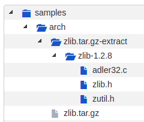

How To Extract Archives¶
ScanCode Toolkit provides archive extraction. This command can be used before running a scan over
a codebase in order to ensure all archives are extracted. Archives found inside an extracted
archive are extracted recursively. Extraction is done in-place in a directory and named after the
archive with '-extract' appended.
Usage:¶
extractcode [OPTIONS] <input>
All Extractcode Options¶
This is intended to be used as an input preparation step, before running the scan. Archives found in an extracted archive are extracted recursively by default. Extraction is done in-place in a directory named ‘-extract’ side-by-side with an archive.
To extract the packages in the samples directory
extractcode samples
This extracts the zlib.tar.gz package:
- --shallow
Do not extract recursively nested archives (e.g. Not archives in archives).
- --verbose
Print verbose file-by-file progress messages.
- --quiet
Do not print any summary or progress message.
- -h, --help
Show the extractcode help message and exit.
- --about
Show information about ScanCode and licensing and exit.
- --version
Show the version and exit.